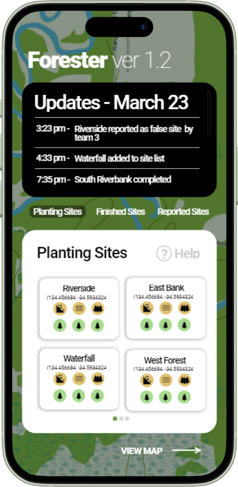

Skills
Programming Languages
 HTML, CSS, Javascript
HTML, CSS, Javascript Python
Python Java
Java C++
C++ Arduino
Arduino
Software Tools
 UXPin
UXPin Protopie
Protopie Figma
Figma Adobe Illustrator
Adobe Illustrator Adobe Photoshop
Adobe Photoshop
Projects
Forester
Forester, created in UXPin as the final project for IAT 334, Interface Design, was a collaborative effort between 2 other students and me. We were tasked to design and create a functional prototype of a mobile application that will help people deal with wildfires, whether it be before, during, or after. Forester focused on assisting with the post-wildfire reforestation efforts using AI to predict areas, potential risks, and suggest trees to plant.
EMO Cubebot

EMO Cubebot, created using Arduino and C++ for IAT 267: Introduction to Technological Systems is an interactive system that took physical input and turned it into a meaningful output on a screen. It is an edcuational tool designed to aid children with Autism Spectrum Disorder (ASD) in development of emotions and fine motor skills. Through interactive scenarioes, children with ASD will be taught to recognize emotions with the goal of them to gradually understand those emotions.
Contact
If you'd like to get in touch, feel free to email me at ran3@sfu.ca.